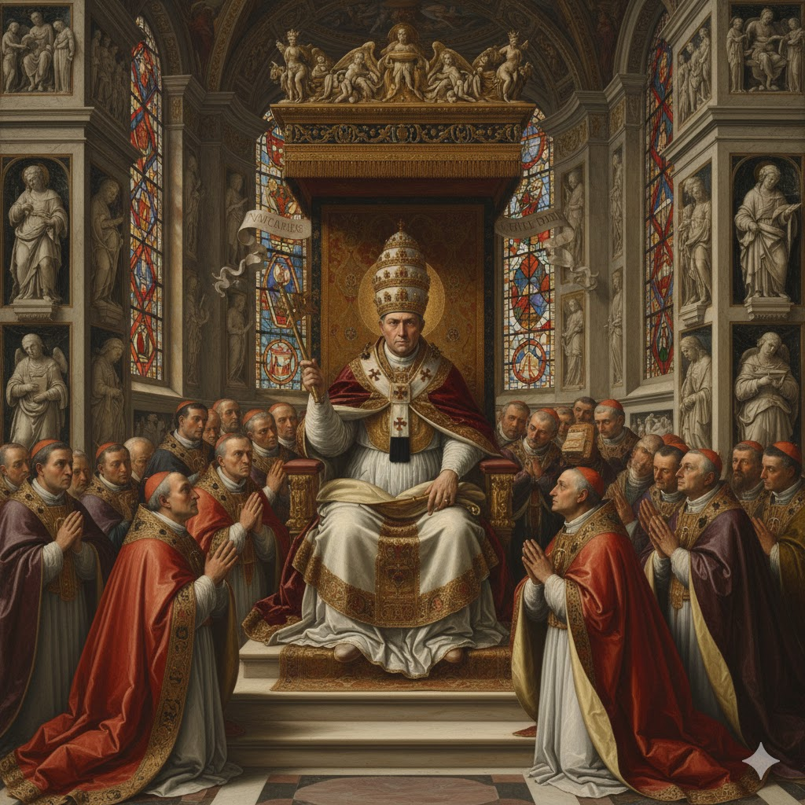
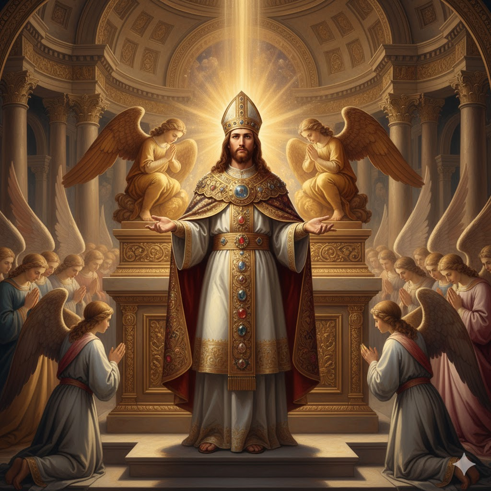

Introdução
O capítulo 13 de Apocalipse amplia com muitos detalhes a guerra do dragão contra a mulher do capítulo 12. O capítulo 12 termina dizendo que o dragão, Satanás, estava irado contra a mulher, a igreja, e foi guerrear contra "os restantes da sua descendência". Então no capítulo 13 são apresentadas duas bestas, símbolo de dois poderes que se aliarão ao dragão contra Deus e Seus santos.
Estes capítulos formam uma mesma unidade temática. O dragão prossegue sua luta contra Deus e desta vez usará dois poderes, duas bestas, para tentar alcançar seus objetivos. No estudo de hoje vamos identificar a primeira besta, que poder ela representa e qual seria sua obra no cenário do tempo do fim.

Identificando a Besta
📊 Daniel 7 - Quatro Animais

Leão (Babilônia), Urso (Medo-Pérsia), Leopardo (Grécia), Animal terrível (Roma)
🐉 Apocalipse 13 - Besta do Mar

Semelhante a leopardo, pés de urso, boca de leão - Roma em duas fases
📋 Paralelo entre Daniel 7 e Apocalipse 13
| Característica | Daniel 7 (Chifre Pequeno) | Apocalipse 13 (Besta do Mar) |
|---|---|---|
| Olhos | Olhos como de homem (7:8) | Número de homem (13:18) |
| Boca | Falava insolências (7:8) | Arrogâncias e blasfêmias (13:5) |
| Domínio | Tirar o domínio e destruir (7:26) | Ferida mortal (13:3) |
| Guerra | Fazia guerra aos santos (7:21) | Pelejaria contra os santos (13:7) |
| Blasfêmia | Palavras contra o Altíssimo (7:25) | Blasfêmias contra Deus (13:6) |
| Lei | Mudaria os tempos e a lei (7:25) | Difamar o tabernáculo (13:6) |
| Tempo | Perseguiria por 1.260 anos (7:25) | Autoridade por 42 meses (13:5) |
O Período de Domínio
📅 Período de Domínio: 1.260 Anos (538-1798)
Blasfêmias e Adoração
👑 Pretensão divina

"Lugar de Deus Todo-Poderoso" - Leão XIII
🕯️ Confissão auricular

Buscar perdão com homens
🏛️ Santuário Celestial

Cristo, o único mediador

Conclusão
Falando desta besta que sobe do mar, o poder papal, Apocalipse 13:8 afirma que "adorá-la-ão todos os que habitam sobre a terra". É evidente que esse "todos" tem sentido relativo, pois os verdadeiros cristãos não adorarão este poder.
Vai chegar o tempo em que a ferida mortal estará completamente curada, e a supremacia da besta será reconhecida em todas as partes do planeta. Não é precisamente para isso que caminhamos, ao ver os noticiários da TV ou sites da Internet? Este poder será mundialmente adorado e, para isso, um dia será dedicado de forma especial.
Apocalipse 13:16 fala de uma marca que será aplicada sobre a mão direita ou sobre a fronte. Esta marca tem haver com um falso dia de adoração que será imposto aos habitantes da terra. Conheceremos mais sobre este assunto em nosso próximo estudo: a besta que sobe da terra.
Por hoje, ouçamos o convite do Apocalipse: "Adorai Aquele que fez o céu, e a terra, e o mar, e as fontes das águas" (Apocalipse 14:7). Ele é nosso Criador e nosso Redentor. Louvado seja Deus!
📝 MINHA DECLARAÇÃO DE FÉ
Assinale com um X se concordar com as declarações abaixo: